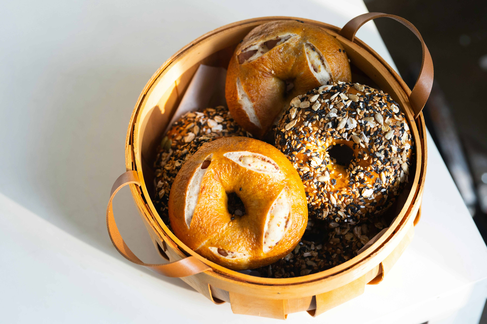

Go-To Bagel Recipe
Back to Favourite Recipes
Craving for bagels? Make one in the comfort of your own home and in your own time with my go-to bagel recipe! You'll only need simple ingredients and equipment and you'll find yourself going back to this whenever you run out of bagels in your pantry.

Let's jump right into it without me chit-chatting more and explain excessively about how you can make one.
What you'll need:
- 300ml of warm water
- 6g of active dry yeast
- 440g of bread flour
- 6g of salt
- 19g of sugar
Instructions
- First, mix 120 ml of warm water with active dry yeast and sugar. Let it sit for 5 minutes and stir to dissolve the sugar.
- Next, mix the bread flour and salt. Make a well in the middle and pour the yeast and water mixture.
- Pour the rest of the water into the mixture and mix well. What you're looking for is a moist and firm dough.
- Cover and let the dough sit for 10 minutes to allow the dough to fully absorb the water.
- Lightly dust flour on a clean countertop, transfer the dough and knead for about 10 minutes until it's smooth and elastic.
- Once kneaded, cover and rest the dough, allow it to rise for 1 hour. The dough should double in size by then.
- Punch the dough down and move it to the countertop. Divide the dough into 8 evenly weighed pieces. Shape each piece into a ball and cover to let it rest for another 10 minutes.
- Shape your bagel by rolling it into a log, pressing down on one end of the dough to flatten it. Wrap the flattened dough around the other end of the dough to create a donut-like shape and pinch the dough to seal the shape.
- Place the dough on a baking tray, cover and let rest for another 10 minutes.
- In the meantime, preheat the oven to 220C. Prepare a large pot of water, heating it up to boil. Once it's boiling, reduce the heat to simmer and carefully place the bagels in one at a time, or however much your pot can hold. Let it simmer on one side for 30 seconds, then flip it and let it simmer for another 30 seconds before taking it out and placing it back on the baking tray.
- This is where you could add toppings on your bagel (sesame, etc.)
- Bake for 20-25 minutes or until golden brown.
- Let them cool on a wire rack and serve with cream cheese or butter of your choice.
That's all you need to do to enjoy a bagel fresh out of the oven at home!